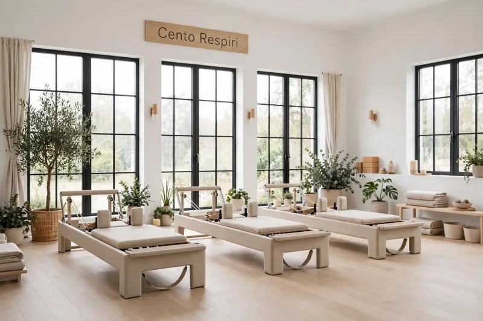
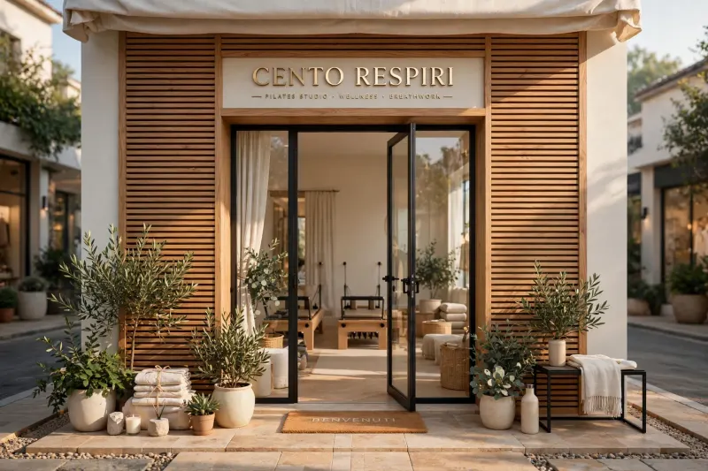
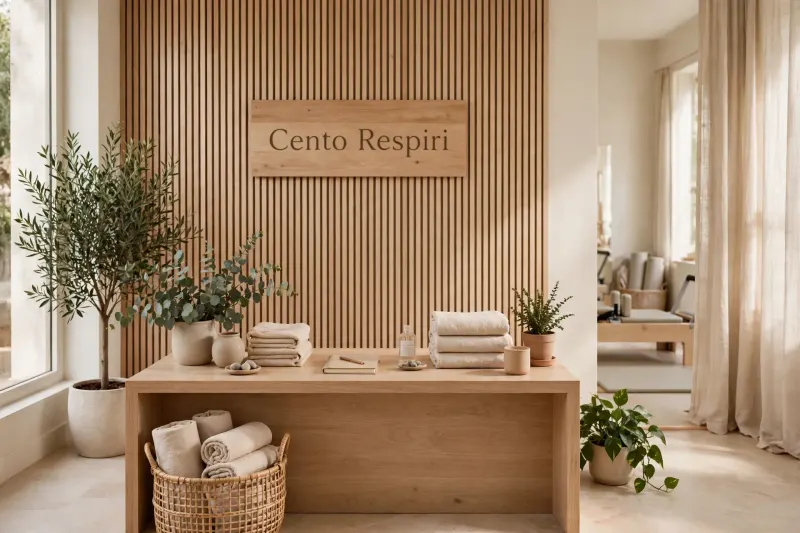
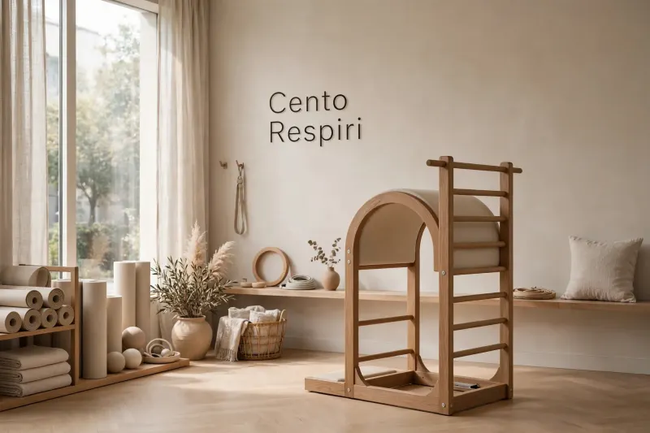
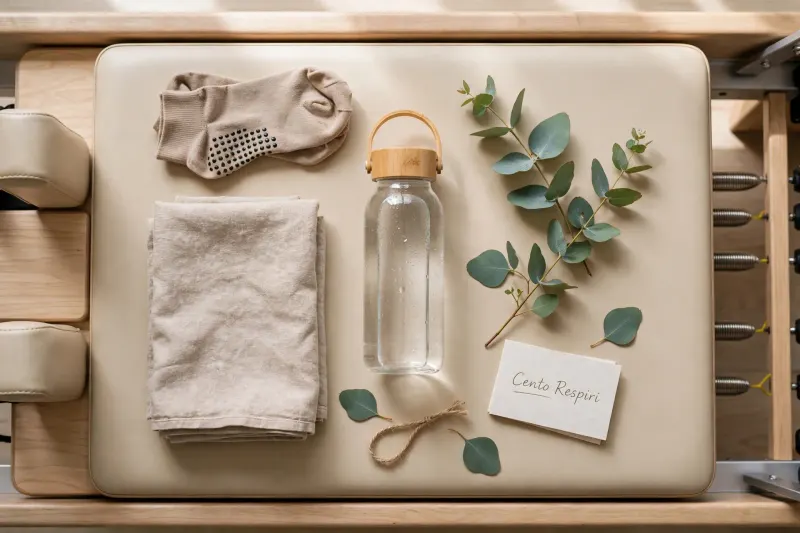
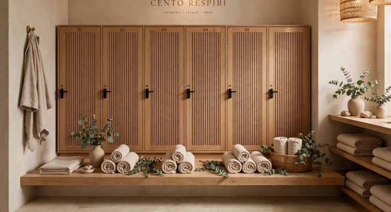

Lo studio
Una sola sala, a piano terra
Una vetrina in legno in una via tranquilla di San Salvario. Sei reformer, una Tower, finestre alte e luce naturale. Spogliatoio con doccia, armadietti, calze antiscivolo per chi le dimentica.





Prima e dopo la lezione
Arrivi, ti cambi, respiri
Armadietti con chiave, doccia, asciugamani e calze antiscivolo: porti solo te stessa o te stesso.

Dove siamo
Via delle Filande 7, Torino
San Salvario, ingresso su strada. Metro Nizza a 5 minuti a piedi, Porta Nuova a 10. Biciclette nel cortile.
Orari
- Lunedì – venerdì
- 7:00 – 21:30
- Sabato
- 9:00 – 13:00
- Domenica
- chiuso
Scriviciciao@centorespiri.it
Chiamaci+39 011 000 0000
Seguici
Un esercizio a settimana, sui social
Ogni lunedì un esercizio da fare a casa spiegato da Marta, Elena o Davide, e le novità dell'orario.
- Instagram@centorespiri.demo · esercizi e storie dallo studio
- FacebookCento Respiri Torino · eventi e workshop
- YouTubeCento Respiri · il Cento spiegato passo per passo
Profili di esempio: lo studio è di fantasia, i link non portano a pagine reali.